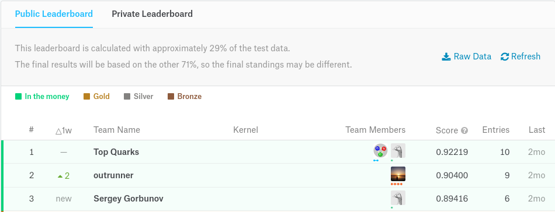
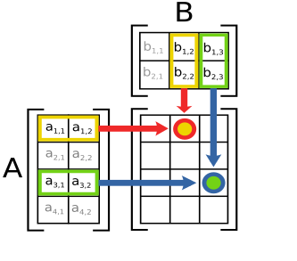

Deep Learning in a nutshell - a tour de force
Peter Steinbach, October 11, 2018, Dresden, Germany
Preface
My employer
Our client: MPI CBG
Disclaimer
These slides are open-source:
A Detour: TrackML
TrackML flow
TrackML data
TrackML Challenge
Final Leaderboard

Which approach won?
The No Free Lunch Theorem
Averaged over all possible data generating distributions, every classification algorithm has the same error rate when classifying previously unobserved points. |
What?
Machine Learning means
This means that the goal of machine learning research is not to seek a universal learning algorithm or the absolute best learning algorithm. Instead, our goal is to understand what kinds of distributions are relevant to the “real world” that an AI agent experiences, and what kinds of machine learning algorithms perform well on data drawn from the kinds of data generating distributions we care about. |
Deep Learning
branch of machine learning
learning data representations
supervised, semi-supervised or unsupervised learning
applications in many fields
Multi-Object Detection with Yolo v2
Image Alteration

Image Restoration
Planaria Worm
|
|
from Microscope | after DL based denoising |


Learning from Mistakes
Let’s narrow a bit

Hands-on: (Deep) Convolutional Neural Networks
Why does it take so long?
Heavy-Lifting inside CNNs
|  |
Convolutions | Matrix Operations |

A closer look
Convolutions
\(y_i = \sum_{n = 0}^{N_k} x_{i+/-n}*k_{i+/-n} \)Matrix Operations
\(AB=Y, y_{ij} = \sum_{k} a_{ik} * b_{kj} \)Common?
Dot Product Structure!
Where do CPUs come from ?
Low Latency Matters Most
GPUs for Deep Learning 1/2
GPUs for Deep Learning 2/2

Latency Hiding
Consequences on the market
Nvidia’s stock pricing in the last years
Benchmarks
deeprace
usable benchmark with clear semver support
model code is fixed
ResNet (v1, v2), CARE Denoising network
Keras+TensorFlow or just TensorFlow
single and multi-gpu training (distributed planned)
data will be open-sourced once I find a sponsor
Hardware
local cluster: Taurus at Technical University Dresden
single GPU node:
Intel Xeon E5-2680 v3 12c
64GB RAM
4x Nvidia Tesla K80 GPU
local servers (Nvidia Titan Xp, Nvidia Tesla P100)
Using ResNet on CIFAR10
Containers!

singularity container = Keras 2.1.5 + TensorFlow 1.3.0
Short runs only
single-GPU training

cloud?
GCE, single K80 instance, 1vCPU, 6GB RAM, 10GB disk
framework differences?
Wrapping up
Deep Learning?
for (unstructured) data like images/sequences/…, neighborhood information crucial to extract information
deep convolutional neural networks have become state of the art in many domains
tentatively a lot of compute power is needed
Relying on Weights can be dangerous
TrackML?
Board Leader Place 3
construct tracklets 2-3 layers(decision tree as code)
prolong tracks to the next layer & find good match
recursively select best track based on metric
Board Leader Place 2
neural network (4k-2k-2k-2k-1k neurons) to select pairs of hits that belong to one track
use seed hit, predict best pairing & construct tracklet
extend tracklet until no hits left (track candidates)
recursively select best track from candidates in event
TrackML Winner
create pairs of hits in adjacent layers
prune pairs with logistic regression based on heuristics
create triples
prune triples with logistic regression based on heuristics
fit helix through triples to create candidate tracks
select best track (by random forest)
Winning Strategy
Note that I have no knowledge of the field or generally used methods, and I spent little effort in trying to look at them. Therefore I don’t know what my novel findings are. |
I divided my algorithm into several steps, and created a scoring metric after each step, so that I could easily tell at which step I could earn the most score. I also made load / score function after each step for rapid debugging and tuning. |
Here is your chance!
Backup
TrackML Tracking
TrackML Simulation